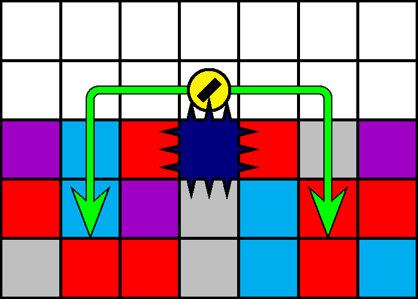

一般指針
愚形・四針直上（針）

指針
四針の直上および直下へは移動しません． 500 m型全体および 800 m型 51 行目以下では急降下しません．
解説
四針は， 500 m型， 700 m型のエリア・バリケード， 800 m型の 51 行目以下に出現します．
四針は四方向に針を出すため，四針に接触した後は，接触方向にかかわらず可能な限り速やかに離脱することが推奨されます．側面で接触した場合は下方へ潜行を継続します．直上で接触した場合は，左または右へ 2 マス移動してから潜行します（図 3.4.6.1）．直上で接触した後に四針の側面や直下を通過すると，刺突される可能性が非常に高くなります．
後期においては犬の潜行速度が上がるため，左または右へ 1 マスだけ移動してから潜行しても刺突を回避できる場合が多いです．
なお，予期しない水平移動は圧迫のリスクを高めます．このため，四針の出現が予測されるステージおよびエリアなど領域の上方では，急降下は推奨されません．「愚形・迷子犬」も参照してください．